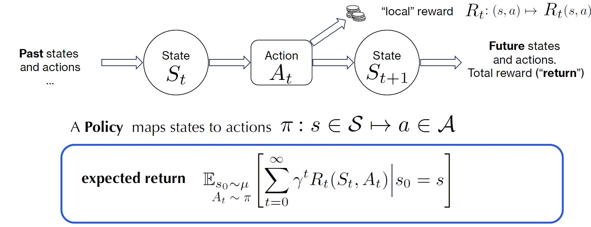
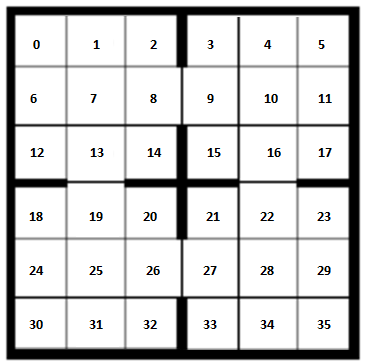
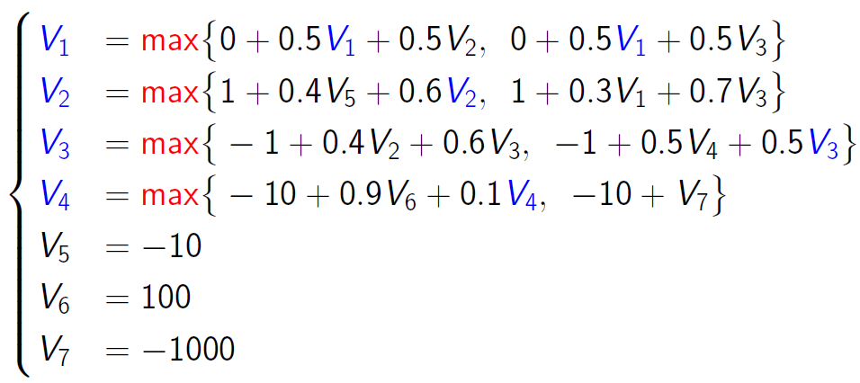
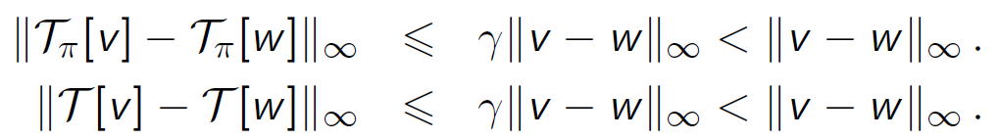

MARKOV DECISION PROCESSES
Odalric-Ambrym Maillard
HORIBA
June 16, 2025

Roadmap
- Why MDPs? Dynamical systems decision making tasks
- Formal definition of Markov Decision Processes
- A short history of MDPs
- Challenge: learning a
Policy - Performance measure:
Value function - Bellman equations
- Dynamic Programming
- Value Iteration
Learning by trial and error, repeatedly

Formal definition of Markov Decision Processes
\(\cM = (\cS,\cA,p,r)\)
- State space \(\cS\): Discrete \(\{S_1,\dots,S_J\}\), Continuous \([0,1]^d, etc.
- Action set \(\cA\): Discrete:\(\{a_1,a_2,a_3,a_4\}\), Continous \([0,1]^d\), etc.
- Reward distribution function : \(r(s,a)\) with mean \(m(s,a)\)
Stochastic transition : \(p(s'|s,a)\)
Dynamical systems
Example of MDP: Mazes
Example of Discrete MDP
State approximation


Example of MDP

MDP counter-example
\(s=\) Position
\(s=\) (Position, Velocity)
Value of a state & Quality of an action
\(
\begin{eqnarray}
\Esp\bigg[ R({\color{red}s_0},\pi(s_0)) + R(s_1,\pi(s_1)) +\dots + R(s_T,\pi(a_T) \bigg]\\
\qquad =
\Esp\bigg[ R({\color{red}s_0},\pi(s_0)) + \sum\limits_{s_1}R(s_1,\pi(s_1))P(s_1|s_0,\pi(s_0)) +\dots \bigg]
\end{eqnarray}
\)
Function of \(s_0\) only !
\(
\Esp\bigg[ R({\color{red}s_0},{\color{red}a_0}) + R(s_1,\pi(s_1)) +\dots + R(s_T,\pi(a_T) \bigg]
\)
Function of \(s_0,a_0\) only!
Performance measure: Value function
Challenge: Computing value \(V^\pi\), Computing
Challenge: Computing an
Solving a small MDP
Two actions: a=Rest, b=Work
Computing the value for a given policy
\(V^\pi = m + P^\pi V^\pi\)
Computing an optimal value
\( V^\star_T(x) = \sum\limits_{t=1}^T (P_\star^{t-1}m_\star)(s) \)
Non-linear system: complicated to solve directly!
Dynamic Programming and Value Iteration
Dynamic programming
\(
\begin{eqnarray}
V^\star_{1:T}(s) &=& \max\limits_\pi\Esp\left[\sum\limits_{t=1}^T r_t |s_1=s\right]\\
&=&\max\limits_{a}m_a(s) + \sum\limits_{s'} P(s'|s,a)\max\limits_{\pi}\Esp\left[\sum\limits_{t=2}^T r_t |s_1=s'\right]\\
&=&\max\limits_{a}m_a(s) + \sum\limits_{s'} P(s'|s,a)V^\star_{2:T}(s')
\end{eqnarray}\)
\(\begin{cases} V^\star_{t:T}(s) = \max\limits_{a}m_a(s) + \sum\limits_{s'} P(s'|s,a)V^\star_{t+1:T}(s')&\forall t < T \\ V^\star_{T:T}(s) = \max\limits_{a}m_a(s). \end{cases} \)
Value with infinite horizon
\( V^\pi(s) = \Esp\left[\sum\limits_{t=1}^\infty \gamma^t r_t |s_1=s\right]\)
\( \begin{eqnarray}V^\pi(s) &=& m_\pi(s_1) + \gamma \sum\limits_{s'} P_\pi(s'|s_1) [m_\pi(s') + \gamma \sum\limits_{s''} P_\pi(s''|s')[\dots\\ &=& \sum\limits_{t=1}^\infty \gamma^{t-1}(P_\pi^{t-1}m_\pi)(s) \end{eqnarray} \)
Bellman and Optimal Bellman equations
\( V^\pi(s) = m_\pi(s) + \gamma \sum\limits_{s'} P_\pi(s'|s) V^\pi(s')\)
\( V^\star(s) = \max\limits_{a\in\cA}m_a(s) + \gamma \sum\limits_{s'} P_\pi(s'|s) V^\star(s')\)
Optimal quality for an\( Q^\star(s,a) = m_a(s) + \gamma \sum\limits_{s'} P(s'|s,a) V^\star(s')\)
\( V^\star(s) = \max\limits_{a\in\cA} Q^\star(s,a) \) and \(\star(s) = \argmax\limits_{a\in\cA}\, Q^\star(s,a)\)
Bellman Operators and Value Iteration

From any \(v_0\) compute:
\(\pi_{n+1} \in \mathcal{G}[v_n]\) and \(v_{n+1} = \mathcal{T}[v_n]=\mathcal{T}_{\pi_n}[v_n]\)
until \(\|v_{n+1}-v_n\|\) is small enough.